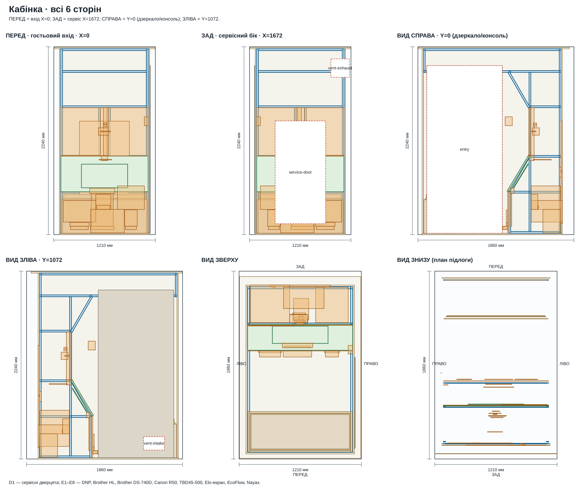
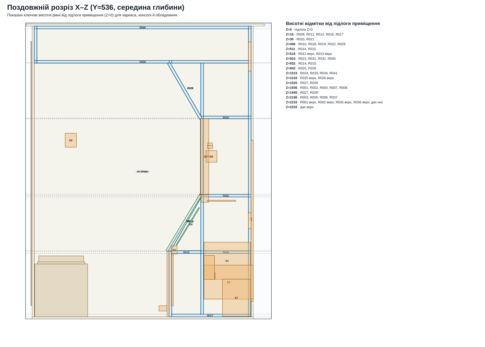
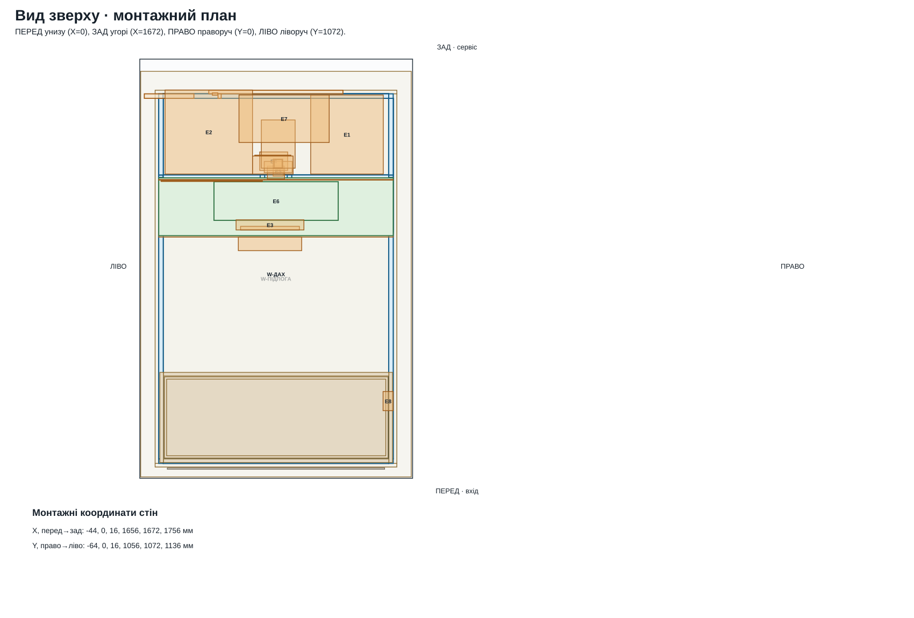
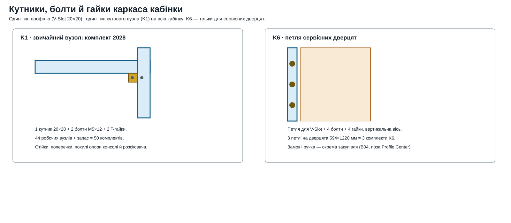
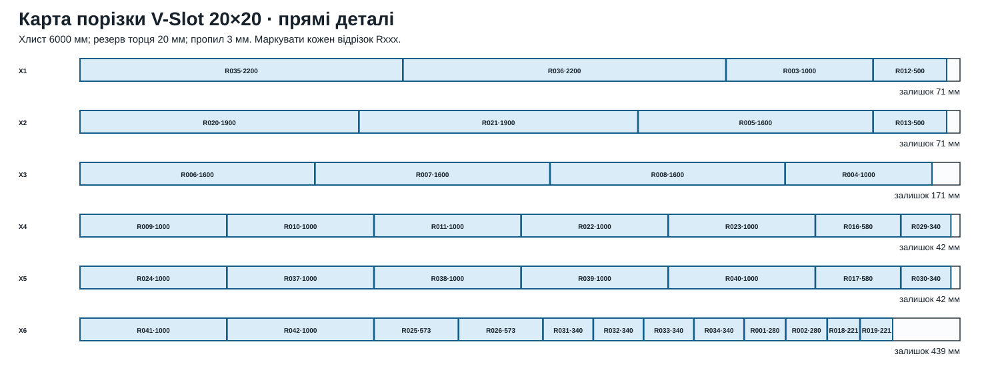
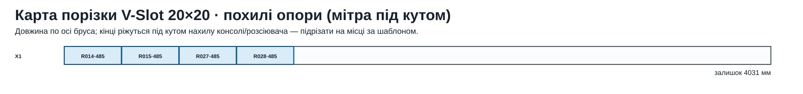

Джерело геометрії: БУДКА.blend → drawings/revision-07/blend-scene.json → scripts/design-07.mjs.
Орієнтація: перед — вхід гостя X=0; зад — сервісний бік X=1672; справа — Y=0 (дзеркало/консоль); зліва — Y=1072.
01 · усі 6 сторін02 · поздовжній розріз і висоти03 · план зверху04 · вузли K1/K605 · порізка прямих06 · порізка похилих




| Марка | Назва | Вісь | L, мм | Позиція X/Y/Z | Джерело в blend | Перевірити | З'єднання |
|---|---|---|---|---|---|---|---|
| R001 | Короткий вертикальний вузол ПЕРЕД (280 мм), рівень Z4, V-Slot 20×20 | Z | 280 | 16 / 16 / 1936 | Cube.011 | виведено з геометрії — перевірити | K1 · комплект 2028 у точках стику з поперечками |
| R002 | Короткий вертикальний вузол ПЕРЕД (280 мм), рівень Z4, V-Slot 20×20 | Z | 280 | 16 / 1036 / 1936 | Cube.012 | виведено з геометрії — перевірити | K1 · комплект 2028 у точках стику з поперечками |
| R003 | Поперечка каркаса вздовж ширини, рівень дах, V-Slot 20×20 | Y | 1000 | 16 / 36 / 2196 | Cube.007 | виведено з геометрії — перевірити | K1 · комплект 2028 на кожному кінці за картою складання |
| R004 | Поперечка каркаса вздовж ширини, рівень Z4, V-Slot 20×20 | Y | 1000 | 16 / 36 / 1936 | Cube.014 | виведено з геометрії — перевірити | K1 · комплект 2028 на кожному кінці за картою складання |
| R005 | Поздовжня балка каркаса (по всій довжині), рівень дах, V-Slot 20×20 | X | 1600 | 36 / 1036 / 2196 | Cube.013 | виведено з геометрії — перевірити | K1 · комплект 2028 на кожному кінці за картою складання |
| R006 | Поздовжня балка каркаса (по всій довжині), рівень дах, V-Slot 20×20 | X | 1600 | 36 / 16 / 2196 | Cube.032 | виведено з геометрії — перевірити | K1 · комплект 2028 на кожному кінці за картою складання |
| R007 | Поздовжня балка каркаса (по всій довжині), рівень Z4, V-Slot 20×20 | X | 1600 | 36 / 16 / 1936 | Cube.025 | виведено з геометрії — перевірити | K1 · комплект 2028 на кожному кінці за картою складання |
| R008 | Поздовжня балка каркаса (по всій довжині), рівень Z4, V-Slot 20×20 | X | 1600 | 36 / 1036 / 1936 | Cube.042 | виведено з геометрії — перевірити | K1 · комплект 2028 на кожному кінці за картою складання |
| R009 | Поперечка каркаса вздовж ширини, рівень підлога, V-Slot 20×20 | Y | 1000 | 1036 / 36 / 16 | Cube.023 | виведено з геометрії — перевірити | K1 · комплект 2028 на кожному кінці за картою складання |
| R010 | Поперечка каркаса вздовж ширини, рівень Z1, V-Slot 20×20 | Y | 1000 | 1036 / 36 / 496 | Cube.024 | виведено з геометрії — перевірити | K1 · комплект 2028 на кожному кінці за картою складання |
| R011 | Поперечка каркаса вздовж ширини, рівень Z4, V-Slot 20×20 | Y | 1000 | 1036 / 36 / 1936 | Cube.017 | виведено з геометрії — перевірити | K1 · комплект 2028 на кожному кінці за картою складання |
| R012 | Стійка під технічною перегородкою ЦОКОЛЬ КОНСОЛІ, рівень підлога, V-Slot 20×20 | Z | 500 | 1036 / 16 / 16 | Cube.021 | виведено з геометрії — перевірити | K1 · комплект 2028 у точках стику з поперечками |
| R013 | Стійка під технічною перегородкою ЦОКОЛЬ КОНСОЛІ, рівень підлога, V-Slot 20×20 | Z | 500 | 1036 / 1036 / 16 | Cube.034 | виведено з геометрії — перевірити | K1 · комплект 2028 у точках стику з поперечками |
| R014 | Похила опора консолі, V-Slot 20×20 (Y=1036) | S | 485 | Y=1036; XZ 1045/510.5 → 1285/932 | Cube.004 | виведено з геометрії — перевірити | K1 · комплект 2028 на кожному кінці (мітра) |
| R015 | Похила опора консолі, V-Slot 20×20 (Y=16) | S | 485 | Y=16; XZ 1045/510.5 → 1285/932 | Cube.003 | виведено з геометрії — перевірити | K1 · комплект 2028 на кожному кінці (мітра) |
| R016 | Коротка перемичка каркаса фотозони, рівень підлога, V-Slot 20×20 | X | 580 | 1056 / 16 / 16 | Cube.020 | виведено з геометрії — перевірити | K1 · комплект 2028 на кожному кінці за картою складання |
| R017 | Коротка перемичка каркаса фотозони, рівень підлога, V-Slot 20×20 | X | 580 | 1056 / 1036 / 16 | Cube.041 | виведено з геометрії — перевірити | K1 · комплект 2028 на кожному кінці за картою складання |
| R018 | Коротка перемичка каркаса фотозони, рівень Z1, V-Slot 20×20 | X | 221 | 1056 / 16 / 496 | Cube.022 | виведено з геометрії — перевірити | K1 · комплект 2028 на кожному кінці за картою складання |
| R019 | Коротка перемичка каркаса фотозони, рівень Z1, V-Slot 20×20 | X | 221 | 1056 / 1036 / 496 | Cube.037 | виведено з геометрії — перевірити | K1 · комплект 2028 на кожному кінці за картою складання |
| R020 | Кутова/колонна стійка ЛІФТ/ФОТОЗОНА, повна висота, рівень підлога, V-Slot 20×20 | Z | 1900 | 1276 / 16 / 36 | Cube.015 | виведено з геометрії — перевірити | K1 · комплект 2028 у точках стику з поперечками |
| R021 | Кутова/колонна стійка ЛІФТ/ФОТОЗОНА, повна висота, рівень підлога, V-Slot 20×20 | Z | 1900 | 1276 / 1036 / 36 | Cube.035 | виведено з геометрії — перевірити | K1 · комплект 2028 у точках стику з поперечками |
| R022 | Поперечка каркаса вздовж ширини, рівень Z1, V-Slot 20×20 | Y | 1000 | 1276 / 36 / 496 | Cube.001 | виведено з геометрії — перевірити | K1 · комплект 2028 на кожному кінці за картою складання |
| R023 | Поперечка каркаса вздовж ширини, рівень Z2, V-Slot 20×20 | Y | 1000 | 1276 / 36 / 923 | Cube.030 | виведено з геометрії — перевірити | K1 · комплект 2028 на кожному кінці за картою складання |
| R024 | Поперечка каркаса вздовж ширини, рівень Z3, V-Slot 20×20 | Y | 1000 | 1276 / 36 / 1515 | Cube.031 | виведено з геометрії — перевірити | K1 · комплект 2028 на кожному кінці за картою складання |
| R025 | Стійка під технічною перегородкою ЛІФТ/ФОТОЗОНА, рівень Z2, V-Slot 20×20 | Z | 573 | 1276 / 466 / 943 | Cube.044 | виведено з геометрії — перевірити | K1 · комплект 2028 у точках стику з поперечками |
| R026 | Стійка під технічною перегородкою ЛІФТ/ФОТОЗОНА, рівень Z2, V-Slot 20×20 | Z | 573 | 1276 / 586 / 943 | Cube.049 | виведено з геометрії — перевірити | K1 · комплект 2028 у точках стику з поперечками |
| R027 | Похила опора верхнього розсіювача, V-Slot 20×20 (Y=1036) | S | 485 | Y=1036; XZ 1285/1520 → 1042.5/1940 | Cube.040 | виведено з геометрії — перевірити | K1 · комплект 2028 на кожному кінці (мітра) |
| R028 | Похила опора верхнього розсіювача, V-Slot 20×20 (Y=16) | S | 485 | Y=16; XZ 1285/1520 → 1042.5/1940 | Cube.029 | виведено з геометрії — перевірити | K1 · комплект 2028 на кожному кінці (мітра) |
| R029 | Коротка перемичка каркаса фотозони, рівень Z1, V-Slot 20×20 | X | 340 | 1296 / 16 / 496 | Cube.026 | виведено з геометрії — перевірити | K1 · комплект 2028 на кожному кінці за картою складання |
| R030 | Коротка перемичка каркаса фотозони, рівень Z1, V-Slot 20×20 | X | 340 | 1296 / 1036 / 496 | Cube.038 | виведено з геометрії — перевірити | K1 · комплект 2028 на кожному кінці за картою складання |
| R031 | Коротка перемичка каркаса фотозони, рівень Z2, V-Slot 20×20 | X | 340 | 1296 / 16 / 923 | Cube.018 | виведено з геометрії — перевірити | K1 · комплект 2028 на кожному кінці за картою складання |
| R032 | Коротка перемичка каркаса фотозони, рівень Z2, V-Slot 20×20 | X | 340 | 1296 / 1036 / 923 | Cube.036 | виведено з геометрії — перевірити | K1 · комплект 2028 на кожному кінці за картою складання |
| R033 | Коротка перемичка каркаса фотозони, рівень Z3, V-Slot 20×20 | X | 340 | 1296 / 16 / 1515 | Cube.028 | виведено з геометрії — перевірити | K1 · комплект 2028 на кожному кінці за картою складання |
| R034 | Коротка перемичка каркаса фотозони, рівень Z3, V-Slot 20×20 | X | 340 | 1296 / 1036 / 1515 | Cube.039 | виведено з геометрії — перевірити | K1 · комплект 2028 на кожному кінці за картою складання |
| R035 | Кутова/колонна стійка ЗАД, повна висота, рівень підлога, V-Slot 20×20 | Z | 2200 | 1636 / 16 / 16 | Cube.008 | виведено з геометрії — перевірити | K1 · комплект 2028 у точках стику з поперечками |
| R036 | Кутова/колонна стійка ЗАД, повна висота, рівень підлога, V-Slot 20×20 | Z | 2200 | 1636 / 1036 / 16 | Cube.009 | виведено з геометрії — перевірити | K1 · комплект 2028 у точках стику з поперечками |
| R037 | Поперечка каркаса вздовж ширини, рівень дах, V-Slot 20×20 | Y | 1000 | 1636 / 36 / 2196 | Cube.006 | виведено з геометрії — перевірити | K1 · комплект 2028 на кожному кінці за картою складання |
| R038 | Поперечка каркаса вздовж ширини, рівень підлога, V-Slot 20×20 | Y | 1000 | 1636 / 36 / 16 | Cube.005 | виведено з геометрії — перевірити | K1 · комплект 2028 на кожному кінці за картою складання |
| R039 | Поперечка каркаса вздовж ширини, рівень Z1, V-Slot 20×20 | Y | 1000 | 1636 / 36 / 496 | Cube.002 | виведено з геометрії — перевірити | K1 · комплект 2028 на кожному кінці за картою складання |
| R040 | Поперечка каркаса вздовж ширини, рівень Z2, V-Slot 20×20 | Y | 1000 | 1636 / 36 / 923 | Cube.045 | виведено з геометрії — перевірити | K1 · комплект 2028 на кожному кінці за картою складання |
| R041 | Поперечка каркаса вздовж ширини, рівень Z3, V-Slot 20×20 | Y | 1000 | 1636 / 36 / 1515 | Cube.016 | виведено з геометрії — перевірити | K1 · комплект 2028 на кожному кінці за картою складання |
| R042 | Поперечка каркаса вздовж ширини, рівень Z4, V-Slot 20×20 | Y | 1000 | 1636 / 36 / 1936 | Cube.046 | виведено з геометрії — перевірити | K1 · комплект 2028 на кожному кінці за картою складання |
| Марка | Назва | Габарит | Позиція X/Y/Z | Отвори |
|---|---|---|---|---|
| W-ПІДЛОГА | Підлога, біла ДСП 16 мм | 1672 × 1072 × 16 | 0 / 0 / 0 | — |
| W-ДАХ | Дах, біла ДСП 16 мм (звис за геометрією блендера) | 1800 × 1200 × 16 | -44 / -64 / 2216 | — |
| W-ЗАД | ЗАД: сервісна стіна, біла ДСП 16 мм | 16 × 1072 × 2200 | 1656 / 0 / 16 | service-door, vent-exhaust |
| W-ПЕРЕД | ПЕРЕД: гостьова стіна входу, біла ДСП 16 мм | 16 × 1072 × 2200 | 0 / 0 / 16 | entry |
| W-СПРАВА | ДСП ПЕРЕД: стіна дзеркала й консолі, біла ДСП 16 мм | 1640 × 16 × 2200 | 16 / 0 / 16 | — |
| W-ЗЛІВА | ЛІВО: бічна стіна, біла ДСП 16 мм | 1640 × 16 × 2200 | 16 / 1056 / 16 | vent-intake |
Один профіль (V-Slot 20×20) і один тип кутового вузла (K1-2028) на весь каркас кабінки, плюс окремий комплект петель (K6) для сервісних дверцят.
| Код | Товар і пряме посилання | Куди використовується | Кількість | Ціна | Сума |
|---|---|---|---|---|---|
| A01 | V-Slot 20×20 без покриття | 38 прямих + 4 похилих деталі каркаса кабінки; чиста довжина 36.888 м | 7 хлист 6 м | 1122.00 | 7854.00 |
| K1 | Комплект 2028: кутник 20×28 + 2 шарнірні болти M5×12 + 2 T-гайки | 44 кутових вузлів каркаса (оцінка з геометрії, включно з похилими опорами) + запас | 50 компл. | 68.00 | 3400.00 |
| K3 | T-болт з гайкою M5×12-20 | кріплення ДСП-обшивки, лавки й похилої консолі до каркаса зсередини | 44 шт. | 26.00 | 1144.00 |
| K5 | T-гайка M5-20 | резерв для дооснащення та заміни втрачених гайок | 30 шт. | 26.00 | 780.00 |
| K6 | Комплект петлі для V-Slot: петля + 4 болти + 4 гайки | три петлі повнорозмірних сервісних дверцят кабінки | 3 компл. | 283.00 | 849.00 |
| S01 | Обов’язкове пакування профілю | вимога продавця для відправлення перевізником | 1 послуга | 220.00 | 220.00 |
| Разом за цінами 15.09.2026 | 14247.00 грн | ||||
Ціна консервативна для повних 6-метрових хлистів. Чиста довжина профілю: 36.888 м. Карти порізки враховують пропил 3 мм і резерв торця.
| Код | Позиція | Кількість | Призначення |
|---|---|---|---|
| B01 | Білий ДСП 16 мм, ламінований | 5 листів 2750×1830 мм (чиста площа 18.25 м², +12% на розкрій) | усі зовнішні й внутрішні панелі кабінки, лавка, консоль |
| B02 | Крайкова стрічка ПВХ 2 мм у тон ДСП | 74 п.м (оцінка периметра панелей) | відкриті торці всіх ДСП-панелей |
| B03 | Конфірмат 7×50 + свердло + шестигранник | 150 шт. + 1 компл. інструменту | збірка ДСП-коробів (стіни між собою, лавка, техперегородка) |
| B04 | Замок сервісних дверцят + ручка | 1 компл. | сервісні дверцята кабінки (594×1220 мм) |
| B05 | Осьовий вентилятор 120×120×25 мм, 12 В, з ШІМ і пиловим фільтром (напр. Arctic P12 PWM PST) | 1 шт. + фільтр на припливну решітку | CTL-002: витяжка ЗАД + пасивний приплив ЛІВО |
| B06 | Решітки вентиляційні 220×220 мм і 250×160 мм, з рамкою | 2 компл. | зовнішнє облицювання вентиляційних отворів |
| B07 | LED-стрічка 24 В (нейтральний білий) + блок живлення 24В/5А + контролер | ≈6 м стрічки + 1 блок | периметр стелі під розсіювачами + підсвітка консолі |
| B08 | Штора-блекаут готова, під розмір 964×2084 мм + карниз-трек 1 м + люверси | 1 компл. | вхідний отвір ПЕРЕД |
| B09 | Поролон 40 мм + оббивочна тканина/екошкіра | за розміром 384×966 мм сидіння | м’яке сидіння лавки |
| B10 | Кабельні муфти PG13.5 (сірі, IP68) | 3 шт. | проходи кабелів крізь ДСП-стінки до техвідсіку |
| B11 | Дзеркало полотно 500×1500 мм у механічній касеті | 1 шт. | гостьова стіна консолі |


| ID | Деталь | Розгортка, мм |
|---|---|---|
| R7-001 | Підлога, біла ДСП 16 мм | 1672 × 1072 × 16 |
| R7-002 | Дах, біла ДСП 16 мм (звис за геометрією блендера) | 1800 × 1200 × 16 |
| R7-003 | ЗАД: сервісна стіна, біла ДСП 16 мм | 16 × 1072 × 2200 |
| R7-004 | ПЕРЕД: гостьова стіна входу, біла ДСП 16 мм | 16 × 1072 × 2200 |
| R7-005 | ДСП ПЕРЕД: стіна дзеркала й консолі, біла ДСП 16 мм | 1640 × 16 × 2200 |
| R7-006 | ЛІВО: бічна стіна, біла ДСП 16 мм | 1640 × 16 × 2200 |
| R7-007 | Сервісні дверцята кабінки: біла ДСП 16 мм на завісах, із замком | 16 × 595 × 1220 |
| R7-017 | Технічна перегородка (цоколь консолі), біла ДСП 16 мм | 16 × 1040 × 500 |
| R7-018 | Лавка: бічна стінка A, біла ДСП 16 мм | 16 × 1000 × 400 |
| R7-019 | Лавка: бічна стінка B, біла ДСП 16 мм | 16 × 1000 × 400 |
| R7-020 | Лавка: торцева стінка, біла ДСП 16 мм | 400 × 16 × 400 |
| R7-021 | Лавка: торцева стінка, біла ДСП 16 мм | 400 × 16 × 400 |
| R7-024 | Похила консоль з екраном і слотом сканера, біла ДСП 16 мм | |
| R7-052 | Верхній розсіювач, опаловий полікарбонат 3 мм | 1020 × 1040 × 3 |
| R7-053 | Лівий розсіювач, опаловий полікарбонат 3 мм | 3 × 470 × 580 |
| R7-054 | Лівий нижній розсіювач, опаловий полікарбонат 3 мм | 3 × 100 × 580 |
| R7-055 | Правий розсіювач, опаловий полікарбонат 3 мм | 3 × 470 × 580 |
| R7-056 | Кутовий верхній розсіювач, опаловий полікарбонат 3 мм | |
| R7-057 | LED-стрічка 24 В під стельовим розсіювачем | 980 × 10 × 3 |
| R7-058 | LED-стрічка 24 В під стельовим розсіювачем | 980 × 10 × 3 |
| R7-059 | LED-стрічка 24 В під стельовим розсіювачем | 980 × 10 × 3 |
| R7-060 | LED-стрічка 24 В під стельовим розсіювачем | 980 × 10 × 3 |
| R7-061 | LED-стрічка над консоллю (підсвітка екрана) | 3 × 450 × 10 |
| R7-101 | Похила опора консолі, V-Slot 20×20 (Y=16) | |
| R7-102 | Похила опора консолі, V-Slot 20×20 (Y=1036) | |
| R7-103 | Похила опора верхнього розсіювача, V-Slot 20×20 (Y=16) | |
| R7-104 | Похила опора верхнього розсіювача, V-Slot 20×20 (Y=1036) |
| ID (марка) | Деталь | Довжина |
|---|---|---|
| R7-063 (R038) | Поперечка каркаса вздовж ширини, рівень підлога, V-Slot 20×20 | 1000 мм |
| R7-064 (R037) | Поперечка каркаса вздовж ширини, рівень дах, V-Slot 20×20 | 1000 мм |
| R7-065 (R003) | Поперечка каркаса вздовж ширини, рівень дах, V-Slot 20×20 | 1000 мм |
| R7-066 (R035) | Кутова/колонна стійка ЗАД, повна висота, рівень підлога, V-Slot 20×20 | 2200 мм |
| R7-067 (R036) | Кутова/колонна стійка ЗАД, повна висота, рівень підлога, V-Slot 20×20 | 2200 мм |
| R7-068 (R001) | Короткий вертикальний вузол ПЕРЕД (280 мм), рівень Z4, V-Slot 20×20 | 280 мм |
| R7-069 (R002) | Короткий вертикальний вузол ПЕРЕД (280 мм), рівень Z4, V-Slot 20×20 | 280 мм |
| R7-070 (R005) | Поздовжня балка каркаса (по всій довжині), рівень дах, V-Slot 20×20 | 1600 мм |
| R7-071 (R012) | Стійка під технічною перегородкою ЦОКОЛЬ КОНСОЛІ, рівень підлога, V-Slot 20×20 | 500 мм |
| R7-072 (R009) | Поперечка каркаса вздовж ширини, рівень підлога, V-Slot 20×20 | 1000 мм |
| R7-073 (R010) | Поперечка каркаса вздовж ширини, рівень Z1, V-Slot 20×20 | 1000 мм |
| R7-074 (R007) | Поздовжня балка каркаса (по всій довжині), рівень Z4, V-Slot 20×20 | 1600 мм |
| R7-075 (R020) | Кутова/колонна стійка ЛІФТ/ФОТОЗОНА, повна висота, рівень підлога, V-Slot 20×20 | 1900 мм |
| R7-076 (R031) | Коротка перемичка каркаса фотозони, рівень Z2, V-Slot 20×20 | 340 мм |
| R7-077 (R018) | Коротка перемичка каркаса фотозони, рівень Z1, V-Slot 20×20 | 221 мм |
| R7-078 (R029) | Коротка перемичка каркаса фотозони, рівень Z1, V-Slot 20×20 | 340 мм |
| R7-079 (R033) | Коротка перемичка каркаса фотозони, рівень Z3, V-Slot 20×20 | 340 мм |
| R7-080 (R023) | Поперечка каркаса вздовж ширини, рівень Z2, V-Slot 20×20 | 1000 мм |
| R7-081 (R024) | Поперечка каркаса вздовж ширини, рівень Z3, V-Slot 20×20 | 1000 мм |
| R7-082 (R016) | Коротка перемичка каркаса фотозони, рівень підлога, V-Slot 20×20 | 580 мм |
| R7-083 (R006) | Поздовжня балка каркаса (по всій довжині), рівень дах, V-Slot 20×20 | 1600 мм |
| R7-084 (R013) | Стійка під технічною перегородкою ЦОКОЛЬ КОНСОЛІ, рівень підлога, V-Slot 20×20 | 500 мм |
| R7-085 (R021) | Кутова/колонна стійка ЛІФТ/ФОТОЗОНА, повна висота, рівень підлога, V-Slot 20×20 | 1900 мм |
| R7-086 (R032) | Коротка перемичка каркаса фотозони, рівень Z2, V-Slot 20×20 | 340 мм |
| R7-087 (R019) | Коротка перемичка каркаса фотозони, рівень Z1, V-Slot 20×20 | 221 мм |
| R7-088 (R030) | Коротка перемичка каркаса фотозони, рівень Z1, V-Slot 20×20 | 340 мм |
| R7-089 (R034) | Коротка перемичка каркаса фотозони, рівень Z3, V-Slot 20×20 | 340 мм |
| R7-090 (R017) | Коротка перемичка каркаса фотозони, рівень підлога, V-Slot 20×20 | 580 мм |
| R7-091 (R008) | Поздовжня балка каркаса (по всій довжині), рівень Z4, V-Slot 20×20 | 1600 мм |
| R7-092 (R004) | Поперечка каркаса вздовж ширини, рівень Z4, V-Slot 20×20 | 1000 мм |
| R7-093 (R040) | Поперечка каркаса вздовж ширини, рівень Z2, V-Slot 20×20 | 1000 мм |
| R7-094 (R042) | Поперечка каркаса вздовж ширини, рівень Z4, V-Slot 20×20 | 1000 мм |
| R7-095 (R022) | Поперечка каркаса вздовж ширини, рівень Z1, V-Slot 20×20 | 1000 мм |
| R7-096 (R039) | Поперечка каркаса вздовж ширини, рівень Z1, V-Slot 20×20 | 1000 мм |
| R7-097 (R041) | Поперечка каркаса вздовж ширини, рівень Z3, V-Slot 20×20 | 1000 мм |
| R7-098 (R011) | Поперечка каркаса вздовж ширини, рівень Z4, V-Slot 20×20 | 1000 мм |
| R7-099 (R025) | Стійка під технічною перегородкою ЛІФТ/ФОТОЗОНА, рівень Z2, V-Slot 20×20 | 573 мм |
| R7-100 (R026) | Стійка під технічною перегородкою ЛІФТ/ФОТОЗОНА, рівень Z2, V-Slot 20×20 | 573 мм |
Відомий підсумок: 265 014 грн. Відкритих позицій без остаточної ціни: 3.
| № | Категорія | Деталь | Кількість | Ціна од., грн | Джерело |
|---|---|---|---|---|---|
| 01 | Фото й оптика | Вибраний комплект Canon R50 + 18–45 | 1 компл. | 31360 | https://fotomost.com.ua/ua/canon-eos-r50-kit-18-45mm/ |
| 02 | Фото й оптика | Вибраний RF-S 14–30 PZ | 1 шт. | 7899 | https://ti.ua/ua/obektiv-dlya-fotoapparata-canon-rf-s-14-30mm-f-4-6-3-is-stm-pz.html |
| 03 | Освітлення | Вибраний Godox MS200V | 1 шт. | 3360 | https://fotomost.com.ua/ua/godox-ms200-v/ |
| 04 | Ліфт і автоматика | Вибраний ліфт TBD45-500 | 1 шт. | 4490 | https://cncprom.ua/ua/p1089207068-linejnyj-modul-tbd45.html |
| 23 | Корпус і матеріали | Напис «ФОТОБУДКА» чорною плівкою Oracal | 1 компл. мін. 1 м² | 450 | https://directprint.in.ua/plotternaya-porezka |
| 24 | Освітлення | Стельова LED-стрічка | 2 котушка 5 м | 812 | https://rozetka.com.ua/ua/431011730/p431011730/ |
| 25 | Освітлення | БЖ LED 24 В | 1 шт. | 1640 | https://vseplus.com/product/blok-pitania-lrs-200-24-193881 |
| 26 | Освітлення | Молочний акрил 3 мм: стеля та світлові панелі | 2.57 м² | 1074.82 | https://promdesign.ua/3-mm-molochnyj-opal-samogon-akril-orgsteklo-thl-3 |
| 27 | Освітлення | Кронштейн спалаху та відбивач | 1 компл. | 450 | |
| 28 | Освітлення | Canon AD-E1 | 1 шт. | 2912 | https://fotomost.com.ua/ua/canon-ad-e1-shoe-adapter/ |
| 29 | Освітлення | PC-sync адаптер на стандартний башмак | 1 шт. | 547 | https://www.aliexpress.com/item/1005005876468662.html |
| 30 | Освітлення | Синхрокабель, рухома ділянка, роз’єми | 1 компл. | 480 | |
| 31 | Фото й оптика | Безперервне живлення камери | 1 компл. | 1200 | |
| 32 | Ліфт і автоматика | Кроковий двигун NEMA23 | 1 шт. | 1049 | https://prom.ua/ua/Shagovye-dvigateli-nema-23.html |
| 33 | Ліфт і автоматика | Кронштейн NEMA23 | 1 шт. | 160 | https://vseplus.com/ua/product/kronstejn-kutovij-nema23-96947 |
| 34 | Ліфт і автоматика | Муфта вала ліфта: 12 мм → вал двигуна | 1 шт. | 269 | https://cncprom.ua/ua/p1000069411-gibkaya-kulachkovaya-mufta.html |
| 35 | Ліфт і автоматика | Драйвер крокового двигуна | 1 шт. | 1584 | https://prom.ua/ua/p697716061-tsifrovoj-drajver-dm542.html |
| 36 | Ліфт і автоматика | БЖ осі | 1 шт. | 672.07 | https://led.kiev.ua/LRS-150-24 |
| 37 | Ліфт і автоматика | Кінцевики | 2 шт. | 125 | https://vseplus.com/ua/product/vimikac-kincevij-me-8108-109514 |
| 38 | Ліфт і автоматика | Аварійна кнопка та апаратний ланцюг | 1 компл. | 403.52 | https://tumbler.com.ua/knopka-grybok-avariyna-d-40mm-z-fiksatsiyeyu-povernennya-povorotom-1nz-plastyk-ip65-emas |
| 39 | Ліфт і автоматика | USB, HDMI, гнучкі кабелі, затискачі | 1 компл. | 900 | |
| 40 | Ліфт і автоматика | Кабелеукладач | 1 м | 180 | https://ua.teslaweld.com/gibkiy-kabel-kanal-kabeleukladchik-15x20 |
| 41 | Ліфт і автоматика | Кронштейн камери, кріплення й упори | 1 компл. | 700 | |
| 42 | Ліфт і автоматика | Незалежне утримання камери | 1 вузол | 350 | |
| 43 | Ліфт і автоматика | Кожух руху, упори, захист пальців | 1 компл. | 600 | |
| 44 | Комп’ютер та інтерфейс | Мінікомп’ютер | 1 шт. | 28159 | https://rombi.com.ua/ua/p2824992421-mini-genmachine-ren.html |
| 45 | Комп’ютер та інтерфейс | Сенсорний монітор | 1 шт. | 14760 | https://www.detaik.com.ua/pos-sistemy/dtk-1566r2-15-6-sensornij-shirokoformatnij-pos-monitor.html |
| 46 | Друк і сканування | Фотопринтер DNP DS-RX1HS | 1 шт. | не визначено | https://new.dnpphoto.com/en-us/Products/Printers/DS-RX1HS |
| 47 | Кріплення й фурнітура | Дві незалежні пари напрямних полиць принтерів | 2 компл. | не визначено | https://epicentrk.ua/ua/shop/mebelnye-napravlyayushchie/fs/tip-napravlyayushchih-teleskopicheskie/ |
| 48 | Друк і сканування | Комплект паперу/стрічки DNP RX1HS4x6 | 1 компл. | 11626.42 | https://www.360pbexpert.store/products/dnp-rx1-hs-media-kit-1400-4x6-prints |
| 49 | Оплата | Вендинговий термінал | 1 шт. | 28885 | https://prom.ua/ua/p2079220256-terminal-nayax-vpos.html |
| 50 | Електрика, мережа й безпека | Обрано: EcoFlow DELTA 2, 1024 Вт·год | 1 компл. | 31999 | https://sanlarix.com.ua/product/zaryadna-stancziya-ecoflow-delta-2-1024-vt-god/ |
| 51 | Електрика, мережа й безпека | Електрощит, автоматика, клеми, заземлення | 1 компл. | 4500 | |
| 52 | Електрика, мережа й безпека | Контролер ESP32 DevKit V1 | 1 компл. | 295 | https://arduino.ua/prod3990-wi-fi-modyl-devkit-v1-s-esp-32 |
| 53 | Електрика, мережа й безпека | Вентилятори Arctic P12, 120 мм | 2 шт. | 209 | https://comfy.ua/ua/korpusnyj-ventiljator-arctic-p12-acfan00118a.html |
| 54 | Електрика, мережа й безпека | Маршрутизатор TP-Link Archer MR200 | 1 компл. | 3699 | https://comfy.ua/ua/marshrutizator-ethernet-tp-link-archer-mr200.html |
| 55 | Комп’ютер та інтерфейс | Динамік і підсилювач для голосу | 1 компл. | 650 | |
| 56 | Роботи й логістика | Вимірювання, стенд, електрична перевірка | 1 робота | 3000 | |
| 57 | Роботи й логістика | Доставка за фактичними кошиками | 1 компл. | 6000 | |
| 61 | Корпус і матеріали | Дитячий бустер із фіксацією | 1 шт. | 900 | |
| 68 | Кріплення й фурнітура | Проміжні опори підлоги та монтажні пластини | 8 шт. | 65 | |
| 69 | Роботи й логістика | Оббивка сидіння та підшивання низу готової штори | 1 робота | 1200 | |
| 71 | Друк і сканування | Монохромний лазерний принтер Brother HL-L5210DN | 1 шт. | не визначено | https://www.brother.eu/-/media/Product-Downloads/Devices/Printers/HL/HLL5210DN/HL-L5210DN---Datasheet.ashx |
| 72 | Друк і сканування | Обрано: Brother DS-740D — протяжний A4 duplex сканер | 1 шт. | 8247 | https://hotline.ua/ua/computer-skanery/brother-ds-740d-ds740dtk1/ |
| 73 | Електрика, мережа й безпека | Камера спостереження в кабіні | 1 шт. | 1620 | https://epicentrk.ua/ua/shop/ip-kamera-imou-nastilna-3-mp-cue-2-ipc-c32ep-3mp-2-8mm-z-wi-fi.html |
| 75 | Друк і сканування | Тонер Brother TN3600XXL | 1 шт. | 11131 | https://ktc.ua/goods/kartridzh_brother_tn3600xxl_black.html |
| 76 | Друк і сканування | Фотобарабан Brother DR3600 | 1 шт. | 14072 | https://inks.com.ua/products/dram-kartridzh-brother-dr3600-75k-dlya-hl-l5210dn-mfc-l5710dn-dr3600 |
| 77 | Друк і сканування | Офісний папір A4 80 г/м², 500 аркушів | 1 пачка | 194.75 | https://office-mix.com.ua/ua/papir-a4-zoom-80g-m-500l-2971278/ |
| 78 | Корпус і матеріали | Кабінка 07 · V-Slot 20×20 без покриття | 7 хлист 6 м | 1122 | https://profile-center.com.ua/alyuminiyevyj-verstatnyj-profil-v-slot-20-20-bez-pokryttya |
| 79 | Кріплення й фурнітура | Кабінка 07 · Комплект 2028: кутник 20×28 + 2 шарнірні болти M5×12 + 2 T-гайки | 50 компл. | 68 | https://profile-center.com.ua/komplekt-2028-kut-z-yednuvalnyj-cynk-alyuminij-2-sht-sharnirnyj-bolt-2-sht-t-gajka |
| 80 | Кріплення й фурнітура | Кабінка 07 · T-болт з гайкою M5×12-20 | 44 шт. | 26 | https://profile-center.com.ua/t-bolt-z-gajkoyu-m5-12-20 |
| 81 | Кріплення й фурнітура | Кабінка 07 · T-гайка M5-20 | 30 шт. | 26 | https://profile-center.com.ua/t-gajka-m5-20-dlya-verstatnogo-profilyu |
| 82 | Кріплення й фурнітура | Кабінка 07 · Комплект петлі для V-Slot: петля + 4 болти + 4 гайки | 3 компл. | 283 | https://profile-center.com.ua/komplekt-petlya-dlya-verstatnogo-profilyu-cynk-alyuminij-4-sht-bolta-4-sht-gajky |
| 83 | Роботи й логістика | Кабінка 07 · Обов’язкове пакування профілю | 1 послуга | 220 | https://profile-center.com.ua/alyuminiyevyj-verstatnyj-profil-v-slot-20-20-bez-pokryttya |
| 84 | Корпус і матеріали | Кабінка 07 · Білий ДСП 16 мм, ламінований | 1 лист | 3494 | https://old.viyar.ua/ua/catalog/kronospan_0101_pe_belyy_fasadnyy_2800kh2070kh16_mm/ |
| 85 | Корпус і матеріали | Кабінка 07 · Крайкова стрічка ПВХ 2 мм у тон ДСП | 1 м.п. | 18 | https://viyar.ua/ua/catalog/kromka/ |
| 86 | Корпус і матеріали | Кабінка 07 · Конфірмат 7×50 + свердло + шестигранник | 1 компл. (150 шт. + клей) | 300 | |
| 87 | Корпус і матеріали | Кабінка 07 · Замок сервісних дверцят + ручка | 1 компл. | 450 | https://kronas.com.ua/ua/furnitura-270/krepyozhnaya-furnitura-365/zamki-366 |
| 88 | Корпус і матеріали | Кабінка 07 · Осьовий вентилятор 120×120×25 мм, 12 В, з ШІМ і пиловим фільтром (напр. Arctic P12 PWM PST) | 1 шт. | 332 | https://brain.com.ua/ukr/Kuler_do_korpusu_Arctic_P12_PWM_Black_ACFAN00119A-p662540.html |
| 89 | Корпус і матеріали | Кабінка 07 · Решітки вентиляційні 220×220 мм і 250×160 мм, з рамкою | 1 компл. (2 решітки) | 380 | |
| 90 | Корпус і матеріали | Кабінка 07 · LED-стрічка 24 В (нейтральний білий) + блок живлення 24В/5А + контролер | 1 компл. | 2750 | https://rozetka.com.ua/ua/431011730/p431011730/ |
| 91 | Корпус і матеріали | Кабінка 07 · Штора-блекаут готова, під розмір 964×2084 мм + карниз-трек 1 м + люверси | 1 компл. | 2400 | |
| 92 | Корпус і матеріали | Кабінка 07 · Поролон 40 мм + оббивочна тканина/екошкіра | 1 компл. | 950 | https://prom.ua/ua/p739781361-porolon-schilnist-40mm.html |
| 93 | Корпус і матеріали | Кабінка 07 · Кабельні муфти PG13.5 (сірі, IP68) | 1 компл. (3 шт. по ~7–8 грн) | 25 | https://viatec.ua/product/UEA-PG135-d6-12-IP68 |
| 94 | Корпус і матеріали | Кабінка 07 · Дзеркало полотно 500×1500 мм у механічній касеті | 1 шт. | 1500 | https://e-dzerkalo.com.ua/ua/p1144944876-zerkalo-4mm-prirezke.html |
Інтерактивна 3D-модель, фільтр деталей і кошторис із посиланнями на магазини: https://bogdanvcode.github.io/fotobudka-dashboard/
{kind=link}
{kind=link}
{kind=link}
{kind=link}
{kind=link}
{kind=link}